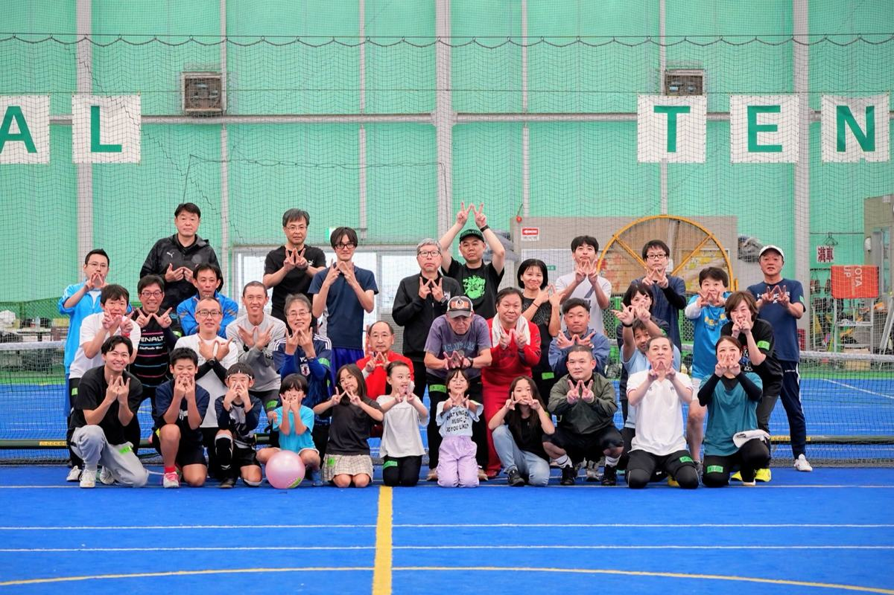
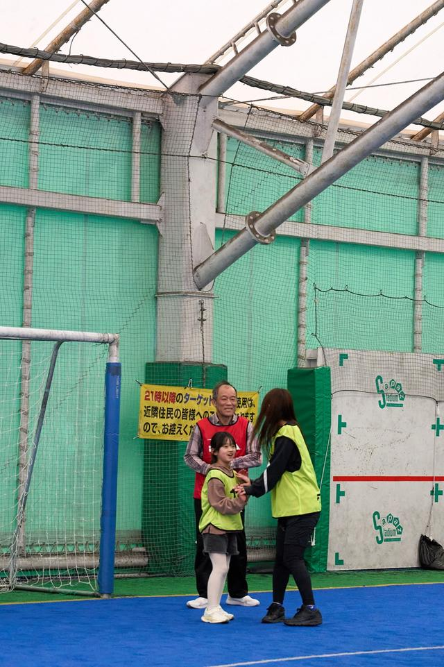
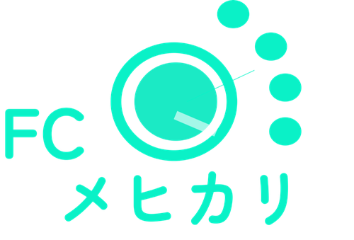
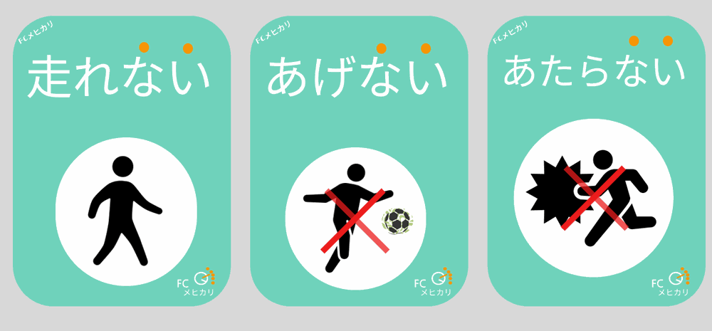

1地域のインフラとなる
総合型地域スポーツクラブ事業
スポーツクラブとして、人と地域をつなぐ
好間などの地域の拠点で、体を動かす場とおしゃべりの場をつくっています。サッカー、ソサイチ、フットサルからモルック、ボッチャまで。種目・世代・目的の垣根をこえて、誰もが会員として参加できる「地域に根ざしたクラブ」を目指し、2027年度の総合型地域スポーツクラブ設立に向けて準備を進めています。
いわき市の地域スポーツクラブ
一般社団法人ふくしま健康デザインは、誰もがスポーツにアクセスできる「地域のスポーツクラブ」をつくっています。サッカーからモルック、ボッチャまで。子どもからシニアまで、一生スポーツを楽しめるまちへ。


ABOUT
スポーツクラブは、地域のインフラになれる。私たちはそう考えています。好間などの地域の拠点で、体を動かす場とおしゃべりの場をつくり、社会的な孤立やフレイルを防ぎ、人がつながるきっかけを生み出しています。
目指すのは、年齢や体力、経験に関係なく、誰もがスポーツにアクセスできる地域です。本気でプレーしたい人も、久しぶりに体を動かしたい人も、見ているだけの人も。その日の気分や体調にあわせて種目を選べる、「生涯スポーツの居場所」をつくっています。
子ども・親世代・シニアが同じ場で体を動かし、自然な交流が生まれる場をつくります。
定期的に通える居場所があることが、心と体の健康を支える予防の力になります。
コーディネーター講習などを通じて、クラブを支え、運営する地域の人を育てます。
SPORTS
走る・蹴るの本格派から、座ったままでも楽しめるものまで。
体力や年齢が変わっても、続けられる種目がある。それが「生涯スポーツ」を楽しめるクラブです。
仲間とチームで本格的に
7人制のサッカー
1人参加の個サルも
囲まれたコートで止まらないプレー
音楽にのって楽しく運動
走らない・触らない歩くサッカー
ボールを蹴ってカップを狙う
木の棒を投げて点数を競う
障害の有無に関係なく楽しめる
ほかにも、地域のみなさんの声から種目を増やしていきます。
参加したい方へ
開催日程はイベントページで確認できます。参加したいイベントが決まったら、公式LINEに「お名前・参加したいイベント・人数」を送ってください。初めての方、1人での参加も大歓迎です。
BUSINESS
中心にあるのは「総合型地域スポーツクラブ」。
クラブ運営と施設運営の両方から、地域にスポーツの場を広げています。

1地域のインフラとなる
スポーツクラブとして、人と地域をつなぐ
好間などの地域の拠点で、体を動かす場とおしゃべりの場をつくっています。サッカー、ソサイチ、フットサルからモルック、ボッチャまで。種目・世代・目的の垣根をこえて、誰もが会員として参加できる「地域に根ざしたクラブ」を目指し、2027年度の総合型地域スポーツクラブ設立に向けて準備を進めています。

2クラブの入口となるチーム
2023年、いわき市で初めて立ち上げたウォーキングフットボールクラブ。走らない・触らない「歩くサッカー」で、体力に自信がない方も、子どもからシニアまで同じピッチで楽しめます。国際交流イベントやJリーグサポーターとの交流など、まちの外ともつながっています。


3生涯フットボーラーの拠点
マルトSC勿来十条内のフットサル施設「HEROES勿来店」を管理・運営しています。一人でも参加できるフットサルやソサイチ、キッチンカーなど人が集まる企画で、誰でも気軽に来られる場をつくっています。
ACTIVITY
スポーツを通じて、国や言葉をこえた交流の場をつくりました。
地域のクラブを応援する人たちと一緒にボールを蹴りました。
学校や公民館に出向き、子どもから大人まで体験の機会を届けています。
クラブを支える担い手を、地域の中から育てています。
定期的に体を動かし、おしゃべりできる地域の居場所です。
スポーツをしない人も立ち寄れる、にぎわいの場をつくっています。
SUPPORT
私たちの活動に賛同し、支えてくださる方を広く募集しています。
いただいた会費は、体験会など地域の健康づくりの場の運営に使わせていただきます。
年会費 一口
3,000円
年会費 一口
10,000円
下記の口座へお振り込みのうえ、お名前・ご住所・お電話番号をメールまたはLINEでお知らせください。
イベントへの協賛、福利厚生としての健康づくりプログラム、施設やグラウンドの提供など、地域スポーツを一緒に育てていただけるパートナーを募集しています。
介護予防・フレイル対策、多世代交流、子どもの運動機会づくりなど、地域課題に対する連携のご相談をお受けしています。
連携・協賛について相談するCONTACT
スポーツへの参加のお申し込みは、公式LINEからお願いします。取材、賛助会員、協賛・連携のご相談は、お電話・メールでもお受けしています。